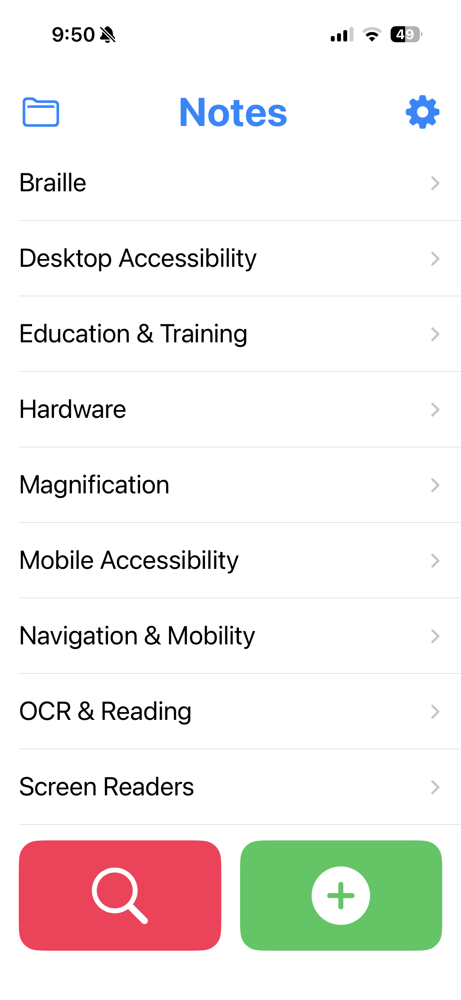

Assignment 15: Transformers for Text Embedding
Note: Still finalizing
Learning Objectives
- Articulate the weaknesses of traditional word embedding models like word2vec
- Understand how transformers can be used to improve word embeddings
- Extend word embeddings to embed text with multiple words
Intro
While we used the idea of text generation as a way to motivate the transformer, the transformer architecture is used in many other contexts. As was mentioned in some of the sources we’ve consulted, the paper “Attention is All You Need”, which introduced the transformer architecture, contained results on the problem of machine translation (translating text from one language to another).
In the next two assignments, we’re going to revisit the problem of text similarity and information retrieval. You will recall, that being able to retrieve relevant pieces of text from a query is the core computational problem that lies at the heart of the EchoMinds app.

Remember that the Echominds app was developed in the summer of 2025 as a notetaking tool for the blind and low vision users. The app’s core value proposition is to enable notes to be capture easily (either through voice or text input) and then retrieved using natural language queries. The design process that was used to arrive at the EchoMinds app was explored in assignment 3.
The team chose to design the app using a retrieval approach (returning the content the user has explicitly entered or imported into the app) rather than a generative approach (e.g., ChatGPT) because in their community-engaged design process, the team heard form users that they had been lied to by GenAI systems in the past. By returning only the data that the user had directly put into the system, the user would have confidence in the accuracy of the results. This decision closely relates to the topic of trust and trustworthiness of Machine learning systems that we explored in assignment 13.
As an example of the usage model for the EchoMinds app, consider the screenshot on the right, which shows the EchoMinds app with many preloading accessibility technology facts. A student who has recently lost their vision and is retraining to do their previous job non-visually, may be learning how to use the JAWS screenreader. They may want to know how to navigate a list of links using JAWS. They may pose the question “How do I navigate links quickly in JAWS?” and the EchoMinds app would search through the accessible technology facts that have been stored in the app and return: “Press INSERT+F7 to display a list of all links on the page.”
Over the next two assignment, we’ll learn about a series of progressively more powerful approaches to solving the task of text similarity and information retrieval. We’ll start from a very simple approach based on word2vec, add in the idea of transformers through an approach called BERT (Bidirectional Encoder Representations from Transformers), learn how to move from word embeddings to sentence embeddings using an approach called SBERT (Sentence BERT), and finally learn how we can fine-tune a sentence embedding on our own dataset to squeeze out more performance.
Initial Approach and Problem Statement
Let’s formalize the problem we’re trying to solve in the creation of the EchoMinds app. Given a series of notes $x_1, x_2, \ldots, x_n$ where each $x_i$ is some piece of text, given query text $x_q$, return a sorted list of notes that are most similar to the query. The notion of similarity is intentional ambiguous here, but you might imagine that the idea of similarity should conform the user’s expectations and the structure of natural language.
As an example, let’s say we have the following notes.
- To silence JAWS speech immediately press the Control key.
- To read the current time in JAWS press Insert + F12.
- To silence TalkBack speech tap the screen with two fingers once.
- Moovit is often used by blind travelers for accessible public transit planning.
Let’s say we have a query term “How do I stop JAWS from talking?”. Given a particular algorithm for defining similarity, we might return the notes in the following order (from most to least similar): (1), (3), (2), (4).
To start ourselves off, you’ll think through a very simple model for text similarity.
Let’s consider an approach to text similarity based on text embeddings. Let’s define a text embedding function $\bm{\phi}(x)$ where $x$ is some piece of text and $\bm{\phi}(x)$ returns a vector of numbers in a $d$-dimensional space. We assume that the directions of the vectors $\bm{\phi}(x)$ in this space captures something about the meaning of the text.Given a query $x_q$ and a potential item to retrieve $x_i$ we define the similarity between the pieces of text using cosine similarity.
While this formula might look daunting it is nothing more than $\cos(\theta)$ where $\theta$ is the angle between the vectors $\bm{\phi}(x_q)$ and $\bm{\phi}(x_i)$ (to understand why this is the case, you just need to recall some facts about the dot product).
Recall that the Continuous Bag of Words model (CBOW), we assign each word in our vocabulary to a $300$-dimensional vector. Assuming you have a trained version of the CBOW model on hand, propose a method for using the CBOW model to compute an embedding of a piece of text. If you can come up with several approaches, list them here. Be as creative as you like. For each of the approaches you come up with, describe the key limitations of the approach for capturing the underlying meaning of the piece of text (e.g., what are some things your approach would not consider about the piece of text that might be important for understanding its meaning).
BERT architecture
Now we’re going to learn about an approach to encoding words as vectors called BERT (Bidirectional Encoder Representations from Transformers).
Another transformer
- 12 transformer layers, each with a multi-headed attention block and a feed-forward layer
- Bidirectional self-attention (as opposed to the causal self-attention in GPTs)
(INSERT) Image comparing translation, GPT, and BERT transformer architectures:
Chris McCormick blog post (explains how to use BERT but not the architecture): (https://mccormickml.com/2019/05/14/BERT-word-embeddings-tutorial/)
No need for students to run the code unless they want to
(INSERT) The histogram in the blog post is weirdly cropped. Here’s a full version with labeled axes:
How BERT is trained (NSP, MLM)
BERT paper section 3.1 (approx 1 page) (https://arxiv.org/pdf/1810.04805)
The loss functions for these tasks are just added I believe
Some kind of output to look at
Maybe comparison of BERT word embeddings with Word2Vec embeddings
What can BERT do that Word2Vec can’t (embed context) (word2vec is effectively a lookup table after training, while BERT takes in the context of the entire sentence a word is in)
Why might BERT work well for our Notebook AI app? (non-generative) What is it still missing? (It doesn’t compare question-answer pairs)
How can we use BERT for our Notebook AI model?
BERT predicts token embeddings, but we need a way to compare two sentences together. Looks like we’re missing something.
We’re going to need to make some modifications to BERT. We have a couple options:
Find a way get BERT to make sentence embeddings, and then compare those embeddings for similarity
Give BERT two sentences and get it to somehow output how similar the sentences are
BERT for sentence embeddings
Let’s look at the first option. We could try averaging all of the token embeddings in a sentence. (this is known as mean-pooling)
Some kind of output
Now, the second option. BERT has a [CLS] token (short for classification) that is meant to be used for classification tasks. It is inputted before the first token in the first sentence that is put into the model. We could try putting a feed-forward layer on the output of the [CLS] token, which will output whether the sentences are a match or not.
Output?
Unfortunately, neither of these approaches will work very well because BERT wasn’t trained on exactly these tasks. It doesn’t know to put information on the similarity of sentences in the [CLS] token or to create its token embeddings so that they can be averaged to make a meaningful sentence embedding. But not to fear, we have another trick up our sleeve—fine-tuning.
Explanation of fine-tuning (we will go more in depth on this later in the assignment)
Let’s look at some setups for fine-tuning BERT for these two tasks.
Introducing SBERT
Biencoder model
Introducing cross-encoders
Classification layer on top of BERT
Reflection
Which of these approaches do you think would be better for the Notebook AI, considering inference time?
Why is SBERT inference time faster?
How do you determine what is a good balance between inference speed and accuracy? (BERT as a cross-encoder is more accurate but slower)
You can combine both of these approaches, using SBERT to get an initial “promising” set of results, then using the cross-encoder to “re-rank” those results. This might be a good balance between inference speed and accuracy.